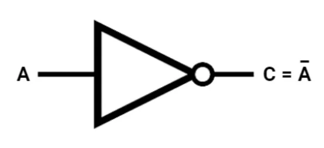
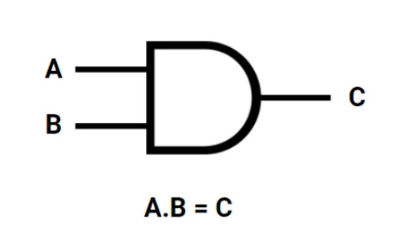
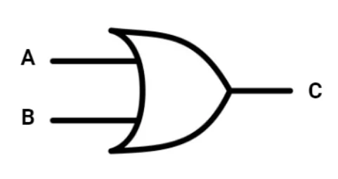
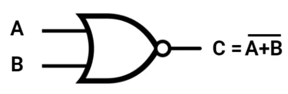
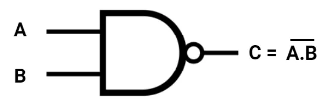

PORTA LÓGICA NOT

A porta lógica NOT, também chamada de inversora, realiza a operação de negação lógica. Ela possui apenas uma entrada e uma saída. Sua principal função é inverter o valor recebido. Se a entrada for 1 (verdadeiro), a saída será 0 (falso). Se a entrada for 0, a saída será 1.
Na álgebra booleana, essa operação é representada por A̅ ou ¬A. Isso significa que o valor lógico é sempre invertido.
A porta NOT é fundamental em circuitos digitais, pois permite controlar ativações e desativações de sinais. Ela é utilizada em sistemas eletrônicos, computadores e dispositivos digitais.
Tabela Verdade
| A | Saída |
|---|---|
| 0 | 1 |
| 1 | 0 |
PORTA LÓGICA AND

A porta lógica AND realiza a operação de multiplicação lógica. Ela possui duas ou mais entradas e uma saída. O resultado será 1 somente quando todas as entradas forem 1. Se pelo menos uma entrada for 0, a saída será 0.
Na álgebra booleana, é representada por A · B. Seu funcionamento é semelhante à multiplicação: 1 · 1 = 1, qualquer outra combinação resulta em 0.
Essa porta é muito utilizada em sistemas de segurança e controle, onde duas condições precisam ser verdadeiras ao mesmo tempo para que algo aconteça.
Tabela Verdade
| A | B | Saída |
|---|---|---|
| 0 | 0 | 0 |
| 0 | 1 | 0 |
| 1 | 0 | 0 |
| 1 | 1 | 1 |
PORTA LÓGICA OR

A porta lógica OR realiza a operação de soma lógica. A saída será 1 quando pelo menos uma das entradas for 1. Ela só retorna 0 quando todas as entradas forem 0.
Na álgebra booleana, é representada por A + B. Diferente da soma matemática comum, 1 + 1 continua sendo 1 na lógica digital.
A porta OR é utilizada quando se deseja que um sistema funcione caso qualquer uma das condições seja verdadeira.
PORTA LÓGICA NOR

A porta NOR é a negação da porta OR. Ela combina a operação OR seguida de uma inversão lógica. A saída será 1 apenas quando todas as entradas forem 0.
Na álgebra booleana, é representada como (A + B)̅.
Assim como a NAND, a NOR é considerada uma porta universal, pois pode ser usada para construir qualquer outro tipo de porta lógica.
PORTA LÓGICA NAND

A porta NAND é a negação da porta AND. Sua saída será 0 somente quando todas as entradas forem 1. Em qualquer outra situação, a saída será 1.
Na álgebra booleana, é representada como (A · B)̅.
A NAND é extremamente importante na eletrônica digital, pois também é considerada uma porta universal, sendo possível construir qualquer circuito lógico usando apenas NAND.